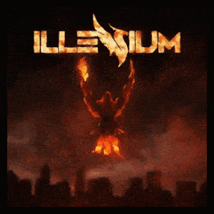

Ascend es el tercer álbum de estudio del DJ y productor estadounidense Illenium, lanzado el 16 de agosto de 2019, a través de Astralwerks, lo que lo convierte en su debut en un sello importante y su único álbum en el sello. El álbum cuenta con 17 canciones. 
Página principal
Biografía
I care (Intro)
Hold on
Good Thing Fall Apart
That´s Why
Blood
Take You Down
All Together
Crashing
Broken ones
Every Piece Of Me
Takeaway
Sad Songs
Pray
In Your Arms
Gorgeous
Angel
Lonely
Shows